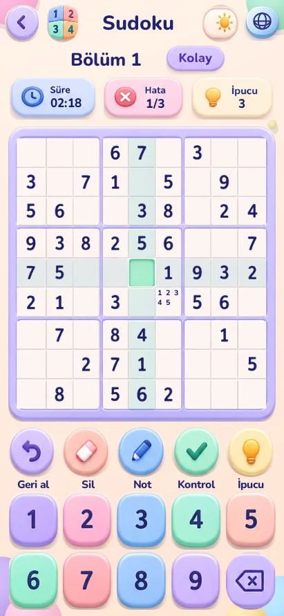
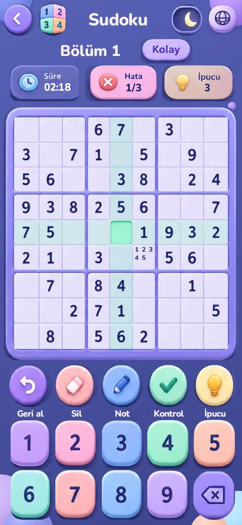

PROCİNALP / SUDOKU
Pufoku:
Pastel Sudoku.
Yumuşak renkler. Dikkatli bir sonraki adım.
TEST / YAYIN HAZIRLIĞI · GENEL YAYIN DOĞRULANMADI


Pastel yüzeylerin altında bir mantık oyunu
Mevcut test projesi gündüz ve gece görünümü, dört zorluk seçimi ve numaralı bölüm haritası içeriyor. Oyun ekranındaki geri al, sil, not, kontrol ve ipucu araçları ayrı işlevler olarak gösteriliyor. Görseller native Android test çizimleridir; fiziksel telefonda alınmış ekran kaydı değildir.
Proje kapsamındaki 1000 bölüm ve 14 dil paketi, bütün bölümlerin oyuncularla test edildiği veya bütün çevirilerin ana dil kontrolünden geçtiği anlamına gelmez. Yayımlanma tarihi ve fiyat ilan etmiyoruz: incelenen kayıtlar test ve yayın hazırlığını belgeliyor, güncel genel mağaza yayını doğrulanmadı.
Bir hücreyi doldurmadan önce
Genel Sudoku kuralında aynı satır, sütun ve 3×3 kutuda 1–9 rakamları tekrarlanmaz. Boş bir hücre için bu üç çevrede zaten bulunan rakamları ele. Örneğin satırda 1, 2 ve 3; sütunda 4, 5 ve 6; kutuda 7 ve 8 varsa geriye 9 kalır. Bu, öğretici bir mantık örneğidir; galerideki bölümün çözümü olarak verilmez.
Not ile kesin rakamı ayır
Gündüz görüntüsünde bir hücrenin içinde küçük aday rakamlar görülüyor. Böyle bir not, hücreye kesin cevap yazmakla aynı şey değildir. Bir aday elediğinde ilgili satır, sütun ve kutuya yeniden bak; başka bir hücrenin olasılıkları da daralmış olabilir. Birden fazla aday kaldıysa tahmin etmek yerine başka bir hücreye geçmek işe yarayabilecek bir çalışma yöntemidir.
Ekran göstergelerini birbirine karıştırma
Süre, hata ve ipucu üstte ayrı gösterilir. Bunlar aynı ilerleme ölçüsü değildir. Görseldeki sayıdan ipuçlarının yenilenme sıklığını veya ödül koşulunu çıkaramayız. Kontrol ve ipucu araçlarını kullanmadan önce kurulu sürümdeki açıklamayı okumak gerekir.
İnceleme notu
26 Ekim 2026 tarihinde mevcut test projesi açıklaması ve tarihli yayın hazırlık notları okundu; gündüz/gece test çizimleri seçildi. Yeni oyun derlemesi, ödeme ayarı veya mağaza işlemi yapılmadı. Bu sayfa gerçek satın alma teklifi sunmaz.
Oyunları keşfet →